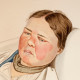

Erysipelas
1.Cap Mefenamic Acid N=30 q8h
2.cap Cephalexin 500mg N=30 q6h
Or Tab Erythromycin 400mg N=20 q12h
Or tab penicillin v 500 N=30 q6h
If Admit:
Or Vial Cefazolin 1-2gr q8h for 3day
Or Ceftriaxone 1-2gr q12h for 3day
نکته: بادسرخ حاشیه مشخص دارد و به سریع ایجاد میشود. و عاملش استرپتوکوک است
نکته: علاوه برآنتی بیوتیک ، کمپرس سرد و ضددرد نیز تجویز شود.
نکته: درصورت وجود آبسه تخلیه شود.
اندیکاسیون های بستری: در بیماران های ریسک و وجود علائم سیستمیک یا گسترش سریع و عدم پاسخ به درمان خوراکی وجود ضایعه در صورت وپرینه و بعد از 3 روز وبهبود اولیه میتونین خوراکی ادامه دهید.
1️⃣ سلولیت
2️⃣ درماتیت تماسی
3️⃣ آنژیو ادم
Herpes Zoster 4️⃣
Erythema Nodosum 5️⃣
6️⃣ لوپوس
7️⃣ مخملک
8️⃣ آرتریت سپتیک
9️⃣ سندرم کمپارتمان
🔟 فاشئیت نکروزان
DVT 1️⃣1️⃣
Toxic shock syndrome 1️⃣2️⃣